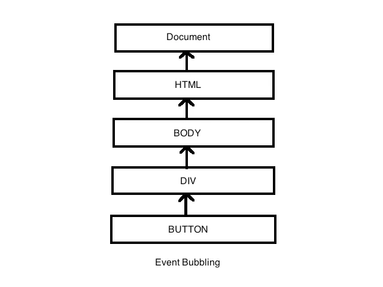

Answer: DOM in Java-Script stands for Document Object Model.
by using DOM javaScript can handle many events to create Dynamic HTML.
its also define
Answer:- To select html elements, we need to know about DOM selectors. They are used to select Html elements, form a Documentsby using Java-Script.
There are 5 most used DOM methodes available in java script.
Answer:- Event Bubbling is a concept of DOM in javaScript. When an element received an event
and that even bubble transmitted to its parent and ancestor elements, until it gets the root element in the DOM tree.

Answer: call back function is a function that is passed as an argument to another function, and called after completing execution of main function.
uses of Call-back function:
call back functions are used to manage results of operations that take significant amount of time to complete.
call-back allow to executing code while the operations are executed in the background.